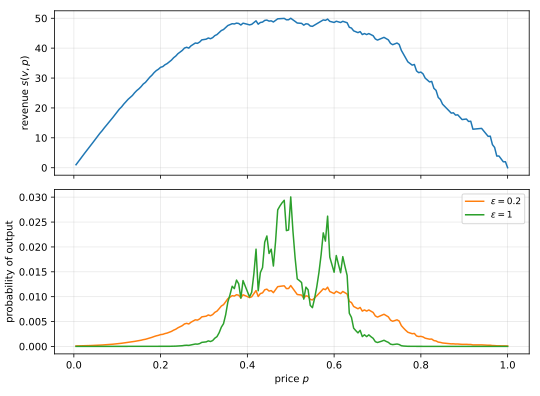

7 The Exponential Mechanism
The Laplace and Gaussian mechanisms release numbers. They work because a small change in a number does little harm. Many tasks instead ask for the best object from a set, such as a price or a classifier, and there a small change in the output can ruin its quality. The exponential mechanism samples each object with a probability that grows exponentially with a score. So good objects are likely, while the choice reveals little about any one person, as differential privacy (DP) requires. This chapter proves that the mechanism is private and nearly optimal, and applies it to three problems.
7.1 Selecting an object
A seller has a digital good, such as an e-book, that costs nothing to copy, and \(n\) buyers who each want one copy. Buyer \(i\) values the good at \(v_i\) and buys it if the price \(p\) is at most \(v_i\). The seller’s revenue at price \(p\) is the price times the number of buyers,
\[ p \cdot \big|\{i : v_i \ge p\}\big| . \tag{7.1}\]
The seller could compute the price with the highest revenue from the valuations, but that price can reveal a single buyer. If one buyer values the good far above the others, the best price may be that buyer’s valuation.
Noise added to the best price does not help, because revenue is very sensitive to the price. Take three buyers who value the good at $1 and one who values it at $2.50. At a price of $1 all four buy and the revenue is $4, but at $1.01 only the last buyer buys and the revenue is $1.01. So a cent of noise can cost three quarters of the revenue. It is better to treat the prices as objects with a quality, the revenue, than as numbers to perturb.
In general, the input to the selection problem has three parts:
- a dataset \(D \in \mathcal X^n\),
- a set \(\mathcal R\) of objects,
- a score function \(u\colon \mathcal X^n \times \mathcal R \to \mathbb R\), where \(u(D,r)\) says how good the object \(r\) is for the dataset \(D\).
In the example, \(D\) is the list of valuations, \(\mathcal R\) is the set of prices, and \(u(D,p)\) is the revenue at price \(p\). Only the dataset is private, while the objects and the score function are public. So the sensitivity measures how much the score of a fixed object can move when one record changes.
Definition 7.1 (Sensitivity of a score function) The sensitivity of a score function \(u\) is
\[ \Delta u = \sup_{r \in \mathcal R}\ \sup_{D \sim D'} \big|u(D,r) - u(D',r)\big| , \tag{7.2}\]
where the inner supremum is over neighbouring datasets, which differ in one record (the replace-one relation).
The score is a single real number, so it needs no choice of norm. The mechanism gives each object \(r\) a weight \(\exp(\varepsilon u(D,r)/(2\Delta))\), where \(\varepsilon\) is the privacy parameter and \(\Delta\) is any upper bound on the sensitivity \(\Delta u\). Division by the sum of all weights, the normalizer, turns the weights into probabilities. For an infinite set of objects, such as an interval of prices, the weights become a density. The sum then becomes an integral against a fixed base measure \(\mu\) on \(\mathcal R\), such as length on the real line.
Definition 7.2 (Exponential mechanism) Let \(\varepsilon > 0\), and let \(\Delta > 0\) satisfy \(\Delta \ge \Delta u\). Let \(\mu\) be a measure on \(\mathcal R\), taken to be the counting measure, which gives each object weight \(1\), when \(\mathcal R\) is finite. Assume that the normalizer
\[ Z(D) = \int_{\mathcal R} \exp\!\left(\frac{\varepsilon\, u(D,r')}{2\Delta}\right) \mu(\mathrm d r') \tag{7.3}\]
is positive and finite for every \(D\). The exponential mechanism \(M_E\) outputs an object \(r \in \mathcal R\) drawn with density, with respect to \(\mu\),
\[ p_D(r) = \frac{1}{Z(D)}\exp\!\left(\frac{\varepsilon\, u(D,r)}{2\Delta}\right) . \tag{7.4}\]
For finite \(\mathcal R\), Equation 7.4 says that \(\Pr[M_E(D) = r]\) is proportional to \(\exp(\varepsilon u(D,r)/(2\Delta))\), so a higher score makes an object more likely. A smaller \(\varepsilon\) or a larger \(\Delta\) flattens the distribution towards uniform, which is more private and less accurate.
The definition says nothing about how to sample. For a finite set, you can compute every weight, add them up and sample, in time proportional to \(|\mathcal R|\), which is slow when \(\mathcal R\) is exponentially large. For an infinite set, the usual remedy is to discretize, as Section 7.4.2 does. So the exponential mechanism always gives an algorithm, but not always an efficient one.
7.2 Privacy
The score of \(r\) changes by at most \(\Delta\) between neighbours, so the weight of \(r\) changes by at most a factor \(e^{\varepsilon/2}\). The normalizer is a sum of such weights, so it also changes by at most \(e^{\varepsilon/2}\), and the two factors together give \(e^\varepsilon\).
Theorem 7.1 The exponential mechanism is \(\varepsilon\)-DP.
Proof.
Fix neighbours \(D \sim D'\) and an object \(r\). By Equation 7.4, the ratio of the densities is
\[ \frac{p_D(r)}{p_{D'}(r)} = \exp\!\left(\frac{\varepsilon\,(u(D,r) - u(D',r))}{2\Delta}\right)\cdot\frac{Z(D')}{Z(D)} . \tag{7.5}\]
By Definition 7.1 and \(\Delta \ge \Delta u\), the difference \(u(D,r) - u(D',r)\) is at most \(\Delta\), so the first factor is at most \(e^{\varepsilon/2}\).
For every object \(r'\), the same bound gives \(u(D',r') \le u(D,r') + \Delta\), so \(\exp(\varepsilon u(D',r')/(2\Delta)) \le e^{\varepsilon/2}\exp(\varepsilon u(D,r')/(2\Delta))\). Integrating over \(r'\) gives \(Z(D') \le e^{\varepsilon/2} Z(D)\), so the second factor is at most \(e^{\varepsilon/2}\).
So \(p_D(r) \le e^\varepsilon p_{D'}(r)\) for every \(r\). For an event \(S \subseteq \mathcal R\), integrating over \(S\) gives \(\Pr[M_E(D)\in S] \le e^\varepsilon\Pr[M_E(D')\in S]\).
Step 3 spends the factor \(2\) in \(2\Delta\), because it pays for the change in the normalizer. When the normalizer does not depend on the dataset, that half of the budget is not needed.
Corollary 7.1 Suppose that \(Z(D)\), computed with \(\Delta\) in place of \(2\Delta\), is the same for every dataset \(D\). Then the mechanism with density proportional to \(\exp(\varepsilon u(D,r)/\Delta)\) is \(\varepsilon\)-DP.
Proof. In step 1 of the proof of Theorem 7.1, with \(\Delta\) in place of \(2\Delta\), the factor \(Z(D')/Z(D)\) equals \(1\), and the first factor is at most \(\exp(\varepsilon\Delta/\Delta) = e^\varepsilon\). Step 4 then applies unchanged.
7.3 Utility
The mechanism should output an object whose score is close to the best one. Write the best score and the set of objects that attain it as
\[ \mathrm{OPT}(D) = \max_{r\in\mathcal R} u(D,r), \qquad \mathcal R^*(D) = \{r \in \mathcal R : u(D,r) = \mathrm{OPT}(D)\} . \tag{7.6}\]
The theorem says that the output’s score is rarely more than about \((2\Delta/\varepsilon)\ln|\mathcal R|\) below \(\mathrm{OPT}(D)\). So the loss grows linearly with the sensitivity and with \(1/\varepsilon\), but only logarithmically with the number of objects.
Theorem 7.2 Let \(\mathcal R\) be finite. For every dataset \(D\) and every \(t \ge 0\),
\[ \Pr\left[u(D, M_E(D)) \le \mathrm{OPT}(D) - \frac{2\Delta}{\varepsilon}\left(\ln\frac{|\mathcal R|}{|\mathcal R^*(D)|} + t\right)\right] \le e^{-t} . \tag{7.7}\]
Proof.
Fix a threshold \(\tau\). The output has score at most \(\tau\) exactly when it is one of the objects with \(u(D,r) \le \tau\), so
\[ \Pr[u(D, M_E(D)) \le \tau] = \frac{\sum_{r : u(D,r)\le \tau}\exp(\varepsilon u(D,r)/(2\Delta))}{\sum_{r'\in\mathcal R}\exp(\varepsilon u(D,r')/(2\Delta))} . \tag{7.8}\]
Numerator. There are at most \(|\mathcal R|\) terms, and each is at most \(\exp(\varepsilon \tau/(2\Delta))\) because its score is at most \(\tau\).
Denominator. Every term is positive, so keeping only the \(|\mathcal R^*(D)|\) terms with score \(\mathrm{OPT}(D)\) gives a lower bound of \(|\mathcal R^*(D)|\exp(\varepsilon\,\mathrm{OPT}(D)/(2\Delta))\).
Together, steps 2 and 3 give
\[ \Pr[u(D, M_E(D)) \le \tau] \le \frac{|\mathcal R|}{|\mathcal R^*(D)|}\exp\!\left(\frac{\varepsilon\,(\tau - \mathrm{OPT}(D))}{2\Delta}\right) . \tag{7.9}\]
Set \(\tau = \mathrm{OPT}(D) - (2\Delta/\varepsilon)\big(\ln(|\mathcal R|/|\mathcal R^*(D)|) + t\big)\). The exponent becomes \(-\ln(|\mathcal R|/|\mathcal R^*(D)|) - t\), and the right-hand side becomes \(e^{-t}\).
Since at least one object attains the best score, dropping \(|\mathcal R^*(D)|\) gives the form that is used most often.
Corollary 7.2 Let \(\mathcal R\) be finite. For every dataset \(D\) and every \(t \ge 0\),
\[ \Pr\left[u(D, M_E(D)) \le \mathrm{OPT}(D) - \frac{2\Delta}{\varepsilon}\big(\ln|\mathcal R| + t\big)\right] \le e^{-t} . \tag{7.10}\]
Proof.
- At least one object attains the best score, so \(|\mathcal R^*(D)| \ge 1\) and \(\ln(|\mathcal R|/|\mathcal R^*(D)|) \le \ln|\mathcal R|\). The threshold in Equation 7.10 is therefore at most the threshold of Theorem 7.2 for the same \(t\), so the event here is contained in the event there, and its probability is at most \(e^{-t}\).
7.4 Applications
Each application below follows the same recipe. It chooses the set of objects and the score function, bounds the sensitivity, and reads off privacy and accuracy from Theorem 7.1 and Corollary 7.2.
7.4.1 The Laplace mechanism
Let \(f\colon\mathcal X^n \to \mathbb R\) have sensitivity \(\Delta f\), which means that \(|f(D) - f(D')| \le \Delta f\) for all neighbours. Take the real line as the set of objects, with Lebesgue measure, and score each candidate answer by its distance from the true one,
\[ u(D, r) = -|f(D) - r| . \tag{7.11}\]
By the triangle inequality, \(\big||f(D) - r| - |f(D') - r|\big| \le |f(D) - f(D')| \le \Delta f\), so \(\Delta u \le \Delta f\). With \(\Delta = \Delta f\), the density Equation 7.4 is proportional to \(\exp(-\varepsilon|f(D) - r|/(2\Delta f))\), which is the density of \(f(D)\) plus Laplace noise of scale \(2\Delta f/\varepsilon\). So the exponential mechanism contains a Laplace mechanism, but with twice the noise scale \(\Delta f/\varepsilon\) of the Laplace mechanism. Corollary 7.1 removes the extra factor.
Proposition 7.1 Let \(f\colon\mathcal X^n \to \mathbb R\) have sensitivity \(\Delta f > 0\). The mechanism that outputs \(f(D)\) plus noise from the Laplace distribution with scale \(\Delta f/\varepsilon\) is \(\varepsilon\)-DP.
Proof.
- The output has density proportional to \(\exp(-\varepsilon|f(D) - r|/(\Delta f)) = \exp(\varepsilon u(D,r)/(\Delta f))\), with the score above, whose sensitivity is at most \(\Delta f\).
- The normalizer is \(\int_{\mathbb R}\exp(-\varepsilon|f(D)-r|/(\Delta f))\,\mathrm d r = 2\Delta f/\varepsilon\), after the substitution \(u = r - f(D)\). It does not depend on \(D\).
- Corollary 7.1, with \(\Delta = \Delta f\), applies and gives \(\varepsilon\)-DP.
7.4.2 Pricing a digital good
Return to the seller of Section 7.1, now with a dataset of valuations \(D = (v_1,\dots,v_n) \in [0,1]^n\) and prices in \([0,1]\). Write \(\gamma\) for the best revenue over all prices,
\[ \gamma = \max_{p\in[0,1]} p\cdot|\{i : v_i \ge p\}| . \tag{7.12}\]
The maximum exists, because the revenue increases linearly between consecutive valuations and drops just after each one, so it is attained at one of the \(v_i\) or at \(0\).
The set of all prices is infinite, and the revenue has no structure that makes sampling easy, so the mechanism runs on a grid. Fix an integer \(m \ge 1\) and the step \(\alpha = 1/m\), and use the \(m\) prices
\[ \mathcal R = \{\alpha, 2\alpha, \dots, 1\} . \tag{7.13}\]
Write \(\mathrm{OPT}(D)\) for the best revenue over the grid. Rounding the best price down to the grid loses a little revenue, which the next lemma bounds.
Lemma 7.1 The best revenue on the grid satisfies \(\mathrm{OPT}(D) \ge \gamma - \alpha n\).
Proof.
- Let \(p^*\) attain \(\gamma\). If \(p^* < \alpha\), then \(\gamma \le p^* n < \alpha n\), so \(\gamma - \alpha n < 0\). Revenue is never negative, so \(\mathrm{OPT}(D) \ge 0 > \gamma - \alpha n\).
- Otherwise, round \(p^*\) down to the grid, \(p' = \alpha\lfloor p^*/\alpha\rfloor \in \mathcal R\), so that \(p^* - \alpha < p' \le p^*\).
- Every buyer with \(v_i \ge p^*\) also has \(v_i \ge p'\). So the revenue at \(p'\) is at least \(p'\cdot|\{i : v_i\ge p^*\}| \ge (p^* - \alpha)|\{i : v_i\ge p^*\}| \ge \gamma - \alpha n\).
So the private price loses revenue twice, once to rounding and once to the random selection. The theorem adds the two losses, with a grid of about \(\varepsilon n\) prices.
Theorem 7.3 Let \(\varepsilon > 0\), \(m = \lceil \varepsilon n\rceil\) and \(\alpha = 1/m\). The exponential mechanism with the grid \(\mathcal R\), the revenue \(u(D,p) = p\cdot|\{i : v_i \ge p\}|\) as score and \(\Delta = 1\) is \(\varepsilon\)-DP. For every \(D\in[0,1]^n\) and \(t \ge 0\), with probability at least \(1 - e^{-t}\), the revenue at its output price is at least
\[ \gamma - \frac{1 + 2\ln\lceil\varepsilon n\rceil + 2t}{\varepsilon} . \tag{7.14}\]
Proof.
- Sensitivity. Changing one valuation changes the number of buyers at any price \(p\) by at most \(1\), and \(p \le 1\). So \(\Delta u \le 1 = \Delta\), and Theorem 7.1 gives \(\varepsilon\)-DP.
- Selection. By Corollary 7.2 with \(|\mathcal R| = m\), with probability at least \(1 - e^{-t}\) the output has revenue at least \(\mathrm{OPT}(D) - (2/\varepsilon)(\ln m + t)\).
- Discretization. By Lemma 7.1, \(\mathrm{OPT}(D) \ge \gamma - n/m\), and \(n/m \le n/(\varepsilon n) = 1/\varepsilon\) because \(m \ge \varepsilon n\).
- Adding the two losses gives Equation 7.14.
The loss is \(O(\log(\varepsilon n)/\varepsilon)\). When a constant fraction of buyers values the good above a constant price, \(\gamma\) grows linearly in \(n\), so the loss is a vanishing fraction of the best revenue. The grid size balances the two losses: a finer grid loses less to rounding, \(\alpha n\), but more to selection, \((2/\varepsilon)\ln(1/\alpha)\). The next example compares the guarantee with the revenue the mechanism actually earns.
Example 7.1 Draw \(n = 1{,}000\) valuations uniformly from \([0,1]\) and take \(\varepsilon = 0.5\), so that the grid has \(m = 500\) prices. The best revenue is \(\gamma = 267.40\), and the best grid price earns \(266.88\). With \(t = \ln 20\), Equation 7.14 guarantees a revenue of at least \(267.40 - 38.84 = 228.56\) with probability \(0.95\). The exact output distribution does much better. Its mean revenue is \(263.86\), and its 5th percentile is \(256.52\), a loss of \(10.88\), so the guarantee is about 3.6 times too pessimistic. Figure 7.1 shows the output distribution on a smaller example.

7.4.3 Private PAC learning
In the probably approximately correct (PAC) model of learning, a learner sees labelled records and must output a classifier that is accurate on new points from the same source. Here the records are points of the Boolean cube \(\{0,1\}^d\), labelled \(0\) or \(1\). The definition measures accuracy by an error \(\alpha\) and a failure probability \(\beta\), so in this section \(\alpha\) is no longer the grid step of the pricing example.
Definition 7.3 (PAC learning) A concept class is a finite set \(\mathcal C\) of functions \(c\colon\{0,1\}^d\to\{0,1\}\). An unknown target \(c^* \in \mathcal C\) and an unknown distribution \(\mathcal D\) on \(\{0,1\}^d\) generate the dataset. Each record is a point \(x_i\), drawn independently from \(\mathcal D\), together with its label \(y_i = c^*(x_i)\). So the dataset is \(D = (z_1, \dots, z_n)\) with labelled records \(z_i = (x_i, y_i)\). The error of a function \(h\) is
\[ \mathrm{err}(h) = \Pr_{x\sim \mathcal D}[h(x) \ne c^*(x)] . \tag{7.15}\]
A learner is \((\alpha,\beta)\)-accurate if, for every target and every \(\mathcal D\), it outputs a function \(\hat h\) with \(\mathrm{err}(\hat h) \le \alpha\) with probability at least \(1-\beta\).
For example, \(\mathcal C\) might be a finite set of half-spaces, each of which labels \(1\) the points on one side of a hyperplane.
Without privacy, the classic learner outputs any function in \(\mathcal C\) that labels every record correctly, and one exists because the target does. It works because, for every function at once, the fraction of mistakes on the sample is close to the error. Write that fraction as
\[ \widehat{\mathrm{err}}(h) = \frac1n\big|\{i : h(x_i)\ne y_i\}\big| . \tag{7.16}\]
The tool is Hoeffding’s inequality: the average of \(n\) independent random variables with values in \([0,1]\) falls below its mean by a margin \(s \ge 0\) or more with probability at most \(\exp(-2ns^2)\). Applied to the mistakes of one function, with a union bound over \(\mathcal C\), it shows that the sample error is close to the true error for every function at once.
Lemma 7.2 Let \(\alpha, \beta \in (0,1)\) and \(n \ge 2\ln(|\mathcal C|/\beta)/\alpha^2\). With probability at least \(1-\beta\) over the sample, every \(h\in\mathcal C\) satisfies \(\mathrm{err}(h) \le \widehat{\mathrm{err}}(h) + \alpha/2\). In particular, every function in \(\mathcal C\) that labels the whole sample correctly has error at most \(\alpha/2\).
Proof.
- Fix \(h \in \mathcal C\). The indicators \(W_i = \mathbf 1[h(x_i)\ne c^*(x_i)]\) are independent, lie in \([0,1]\), and have mean \(\mathrm{err}(h)\), because the \(x_i\) are independent draws from \(\mathcal D\). Their average is \(\widehat{\mathrm{err}}(h)\).
- Hoeffding’s inequality with \(s = \alpha/2\) gives \(\Pr[\widehat{\mathrm{err}}(h) \le \mathrm{err}(h) - \alpha/2] \le \exp(-n\alpha^2/2) \le \beta/|\mathcal C|\), by the bound on \(n\).
- A union bound over the \(|\mathcal C|\) functions shows that some \(h\) fails with probability at most \(\beta\).
- A function that labels the sample correctly has \(\widehat{\mathrm{err}}(h) = 0\), so its error is at most \(\alpha/2\).
So about \(\ln|\mathcal C|/\alpha^2\) records suffice.
For privacy, neighbouring datasets differ in one labelled record: any pair \(z_i' = (x_i', y_i')\) can replace \(z_i = (x_i, y_i)\). The new point need not come from \(\mathcal D\), and its label need not equal \(c^*(x_i')\). Accuracy is proved for data drawn from the model, but privacy must hold for every dataset, so that a wrong model never costs anyone their privacy.
The private learner keeps the aim of few mistakes on the sample, but chooses the function with the exponential mechanism. Its score is minus the sample error, so a function with fewer mistakes is more likely.
Theorem 7.4 (Private PAC learning) Let \(\varepsilon > 0\) and \(\alpha,\beta\in(0,1)\). Run the exponential mechanism with \(\mathcal R = \mathcal C\), the score \(u(D,h) = -\widehat{\mathrm{err}}(h)\) and \(\Delta = 1/n\). It is \(\varepsilon\)-DP for every dataset. If
\[ n \ge \frac{2\ln(2|\mathcal C|/\beta)}{\alpha^2} \qquad\text{and}\qquad n \ge \frac{4\ln(2|\mathcal C|/\beta)}{\alpha\varepsilon}, \tag{7.17}\]
then it is an \((\alpha,\beta)\)-accurate learner.
Proof.
Privacy. Replacing one labelled record changes the number of mistakes of each \(h\) by at most \(1\), so \(\Delta u \le 1/n\). Theorem 7.1 gives \(\varepsilon\)-DP for all datasets, whatever their labels.
Selection. The target makes no mistakes, so \(\mathrm{OPT} = 0\). By Corollary 7.2 with \(t = \ln(2/\beta)\), with probability at least \(1 - \beta/2\) over the mechanism’s coins, the output \(\hat h\) has
\[ \widehat{\mathrm{err}}(\hat h) \le \frac{2}{\varepsilon n}\big(\ln|\mathcal C| + \ln(2/\beta)\big) = \frac{2\ln(2|\mathcal C|/\beta)}{\varepsilon n} \le \frac\alpha2 , \tag{7.18}\]
where the last step uses the second bound on \(n\).
Generalization. The first bound on \(n\) is the condition of Lemma 7.2 with \(\beta/2\) in place of \(\beta\). So with probability at least \(1-\beta/2\) over the sample, every \(h\in\mathcal C\), including \(\hat h\), has \(\mathrm{err}(h)\le\widehat{\mathrm{err}}(h)+\alpha/2\).
By a union bound, both events hold with probability at least \(1-\beta\), and then \(\mathrm{err}(\hat h) \le \alpha/2 + \alpha/2 = \alpha\).
The first bound on \(n\) is what learning needs without privacy, and the second is the cost of privacy. Both are logarithmic in \(|\mathcal C|\), and for \(\varepsilon\) of constant size and small \(\alpha\), the cost of privacy is a lower-order term. For instance, with \(|\mathcal C| = 2^{20}\), \(\alpha = \beta = 0.05\) and \(\varepsilon = 1\), we have \(\ln(2|\mathcal C|/\beta) = 17.552\), and the two bounds are \(14{,}041\) and \(1{,}404\). The price is computation, because the mechanism scores every function in \(\mathcal C\).
7.5 Summary
| Result | Statement |
|---|---|
| Definition 7.2 | output \(r\) with probability proportional to \(\exp(\varepsilon u(D,r)/(2\Delta))\) |
| Theorem 7.1 | the exponential mechanism is \(\varepsilon\)-DP |
| Corollary 7.1 | with a normalizer independent of \(D\), \(\exp(\varepsilon u/\Delta)\) is \(\varepsilon\)-DP |
| Theorem 7.2 | the score falls below \(\mathrm{OPT} - \frac{2\Delta}{\varepsilon}(\ln\frac{|\mathcal R|}{|\mathcal R^*|} + t)\) with probability at most \(e^{-t}\) |
| Corollary 7.2 | the same with \(\ln|\mathcal R|\) |
| Proposition 7.1 | the Laplace mechanism is the exponential mechanism with score \(-|f(D) - r|\) |
| Theorem 7.3 | a private price earns \(\gamma - O(\log(\varepsilon n)/\varepsilon)\) |
| Lemma 7.2 | \(2\ln(|\mathcal C|/\beta)/\alpha^2\) records make every sample error close to the true error |
| Theorem 7.4 | private PAC learning with \(O\big(\ln(|\mathcal C|/\beta)(1/\alpha^2 + 1/(\alpha\varepsilon))\big)\) records |
7.6 References
- Frank McSherry and Kunal Talwar, “Mechanism Design via Differential Privacy”, 2007. Defines the exponential mechanism and applies it to the digital goods auction.
- Cynthia Dwork and Aaron Roth, The Algorithmic Foundations of Differential Privacy, 2014. Presents the mechanism and its privacy and utility theorems in Section 3.4.
- Salil Vadhan, “The Complexity of Differential Privacy”, 2017. Treats private PAC learning in Section 8.
- Andrew V. Goldberg, Jason D. Hartline and Andrew Wright, “Competitive Auctions and Digital Goods”, 2001. Poses the digital goods auction.
- Leslie G. Valiant, “A Theory of the Learnable”, 1984. Defines the PAC model of learning.
- Shiva Prasad Kasiviswanathan, Homin K. Lee, Kobbi Nissim, Sofya Raskhodnikova and Adam Smith, “What Can We Learn Privately?”, 2008. Learns every finite class privately with the exponential mechanism.
- Wassily Hoeffding, “Probability Inequalities for Sums of Bounded Random Variables”, 1963. Gives the tail bound behind Lemma 7.2.